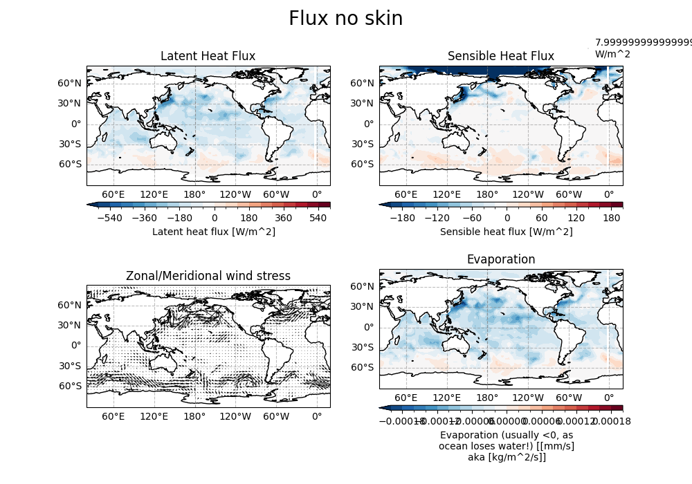
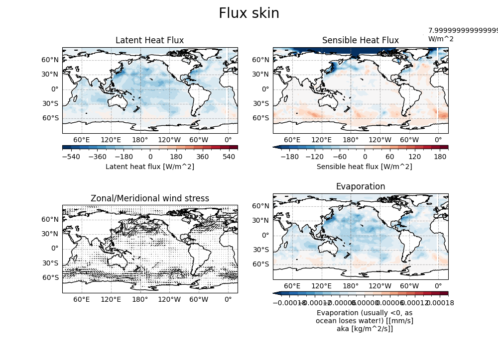

Note
Go to the end to download the full example code.
Estimate Turbulent Air-sea Fluxes¶
AeroBulk is a FORTRAN90-based library and suite of tools that feature state of the art parameterizations to estimate turbulent air-sea fluxes by means of the traditional aerodynamic bulk formulae.
These turbulent fluxes, namely, wind stress, evaporation (latent heat flux) and sensible heat flux, are estimated using the sea surface temperature (bulk or skin), and the near-surface atmospheric surface state: wind speed, air temperature and humidity. If the cool-skin/warm-layer schemes need to be called to estimate the skin temperature, surface downwelling shortwave and longwave radiative fluxes are required.
See also
Before proceeding with all the steps, first import some necessary libraries and packages
import xarray as xr
import cartopy.crs as ccrs
import matplotlib.pyplot as plt
import easyclimate as ecl
Load the NetCDF sample ERA5 dataset containing near-surface atmospheric variables (e.g., 2m temperature, dewpoint temperature, 10m wind components, mean sea level pressure) and sea surface temperature (SST), and display its metadata structure to verify the dimensions and attributes of input variables.
sample_data = xr.open_dataset("sample_data_N20.nc")
sample_data
Convert 2m dewpoint temperature (d2m) and mean sea level pressure (msl) data to near-surface specific humidity (q)
using easyclimate.physics.transfer_dewpoint_2_specific_humidity,
leveraging thermodynamic relationships;
this specific humidity is a critical humidity parameter for calculating turbulent heat fluxes (latent heat flux).
q_data = ecl.physics.transfer_dewpoint_2_specific_humidity(
dewpoint_data = sample_data.d2m,
pressure_data = sample_data.msl,
dewpoint_data_units = "K",
pressure_data_units = "Pa"
)
q_data
Compute turbulent air-sea fluxes without sea surface skin temperature correction using easyclimate.field.boundary_layer.calc_turbulent_fluxes_without_skin_correction
(employing the NCAR parameterization scheme). Inputs include SST, 2m air temperature,
specific humidity, 10m wind components, and mean sea level pressure, yielding outputs of latent heat flux (ql),
sensible heat flux (qh), wind stress components (taux, tauy), and evaporation (evap) as an xarray Dataset.
flux_no_skin = ecl.field.boundary_layer.calc_turbulent_fluxes_without_skin_correction(
sst_data = sample_data.sst,
sst_data_units = 'K',
absolute_temperature_data = sample_data.t2m,
absolute_temperature_data_units = 'degK',
specific_humidity_data = q_data,
specific_humidity_data_units = 'g/g',
zonal_wind_speed_data = sample_data.u10,
meridional_wind_speed_data = sample_data.v10,
mean_sea_level_pressure_data = sample_data.msl,
mean_sea_level_pressure_data_units = 'Pa',
algorithm = 'ncar',
)
flux_no_skin
Visualize the turbulent flux results without skin correction using Cartopy and Matplotlib. A 2x2 subplot layout displays the initial time-step latent heat flux (filled contour), sensible heat flux (filled contour), wind stress vectors (Quiver plot), and evaporation (filled contour). The Plate Carrée projection is applied with coastlines and gridlines to enhance geographic referencing.
proj = ccrs.PlateCarree(central_longitude = 200)
proj_trans = ccrs.PlateCarree()
fig, ax = plt.subplots(2, 2, figsize = (10, 7), subplot_kw={"projection": proj})
# -----------------------------------------------
axi = ax[0, 0]
draw_data = flux_no_skin["ql"].isel(time = 0)
draw_data.plot.contourf(
ax = axi, vmax = 600, levels = 21,
transform = proj_trans,
cbar_kwargs={"location": "bottom", "aspect": 50, "pad" : 0.1}
)
axi.coastlines()
axi.gridlines(draw_labels=["left", "bottom"], color="grey", alpha=0.5, linestyle="--")
axi.set_title("Latent Heat Flux")
# -----------------------------------------------
axi = ax[0, 1]
draw_data = flux_no_skin["qh"].isel(time = 0)
draw_data.plot.contourf(
ax = axi, vmax = 200, levels = 21,
transform = proj_trans,
cbar_kwargs={"location": "bottom", "aspect": 50, "pad" : 0.1}
)
axi.coastlines()
axi.gridlines(draw_labels=["left", "bottom"], color="grey", alpha=0.5, linestyle="--")
axi.set_title("Sensible Heat Flux")
# -----------------------------------------------
axi = ax[1, 0]
draw_data = flux_no_skin[["taux", "tauy"]].isel(time = 0)
draw_data.plot.quiver(
x = "lon", y = "lat", u = "taux", v = "tauy",
transform = proj_trans, ax = axi,
)
axi.coastlines()
axi.gridlines(draw_labels=["left", "bottom"], color="grey", alpha=0.5, linestyle="--")
axi.set_title("Zonal/Meridional wind stress")
# -----------------------------------------------
axi = ax[1, 1]
draw_data = flux_no_skin["evap"].isel(time = 0)
draw_data.plot.contourf(
ax = axi, vmax = 0.0002, levels = 21,
transform = proj_trans,
cbar_kwargs={"location": "bottom", "aspect": 50, "pad" : 0.1}
)
axi.coastlines()
axi.gridlines(draw_labels=["left", "bottom"], color="grey", alpha=0.5, linestyle="--")
axi.set_title("Evaporation")
# -----------------------------------------------
fig.suptitle("Flux no skin", size = 20)

Text(0.5, 0.98, 'Flux no skin')
Compute turbulent air-sea fluxes with sea surface skin temperature correction using easyclimate.field.boundary_layer.calc_turbulent_fluxes_skin_correction
(utilizing the COARE3.0 parameterization scheme). In addition to base inputs,
time-normalized (divided by 3600 seconds) downwelling shortwave and longwave radiation fluxes (converted to \(\mathrm{W/m^2}\))
are included to account for sea surface skin temperature effects, yielding an xarray Dataset of corrected fluxes.
Warning
For the ERA5 reanalysis, the processing period is over the 1 hour ending at the validity date and time. To convert to watts per square metre ( \(\mathrm{W/m^2}\) ), the accumulated values should be divided by the accumulation period expressed in seconds.
flux_skin = ecl.field.boundary_layer.calc_turbulent_fluxes_skin_correction(
sst_data = sample_data.sst,
sst_data_units = 'K',
absolute_temperature_data = sample_data.t2m,
absolute_temperature_data_units = 'degK',
specific_humidity_data = q_data,
specific_humidity_data_units = 'g/g',
zonal_wind_speed_data = sample_data.u10,
meridional_wind_speed_data = sample_data.v10,
mean_sea_level_pressure_data = sample_data.msl,
mean_sea_level_pressure_data_units = 'Pa',
downwelling_shortwave_radiation = sample_data.ssrd/(3600),
downwelling_shortwave_radiation_units = "W/m^2",
downwelling_longwave_radiation = sample_data.ssrd/(3600),
downwelling_longwave_radiation_units = "W/m^2",
algorithm = 'coare3p0',
)
flux_skin
/home/runner/work/easyclimate/easyclimate/src/easyclimate/field/boundary_layer/aerobulk.py:149: UserWarning: The varable rad_lw of values 1189.8050537109375 is beyond [0, 750]。
warnings.warn(
Visualize the turbulent flux results with skin correction, maintaining the same 2x2 subplot layout and visualization parameters (projection, contour ranges, coastlines, etc.) as the non-skin-corrected plots to facilitate direct comparison of the impacts of skin temperature correction on latent heat flux, sensible heat flux, wind stress, and evaporation.
proj = ccrs.PlateCarree(central_longitude = 200)
proj_trans = ccrs.PlateCarree()
fig, ax = plt.subplots(2, 2, figsize = (10, 7), subplot_kw={"projection": proj})
# -----------------------------------------------
axi = ax[0, 0]
draw_data = flux_skin["ql"].isel(time = 0)
draw_data.plot.contourf(
ax = axi, vmax = 600, levels = 21,
transform = proj_trans,
cbar_kwargs={"location": "bottom", "aspect": 50, "pad" : 0.1}
)
axi.coastlines()
axi.gridlines(draw_labels=["left", "bottom"], color="grey", alpha=0.5, linestyle="--")
axi.set_title("Latent Heat Flux")
# -----------------------------------------------
axi = ax[0, 1]
draw_data = flux_skin["qh"].isel(time = 0)
draw_data.plot.contourf(
ax = axi, vmax = 200, levels = 21,
transform = proj_trans,
cbar_kwargs={"location": "bottom", "aspect": 50, "pad" : 0.1}
)
axi.coastlines()
axi.gridlines(draw_labels=["left", "bottom"], color="grey", alpha=0.5, linestyle="--")
axi.set_title("Sensible Heat Flux")
# -----------------------------------------------
axi = ax[1, 0]
draw_data = flux_skin[["taux", "tauy"]].isel(time = 0)
draw_data.plot.quiver(
x = "lon", y = "lat", u = "taux", v = "tauy",
transform = proj_trans, ax = axi,
)
axi.coastlines()
axi.gridlines(draw_labels=["left", "bottom"], color="grey", alpha=0.5, linestyle="--")
axi.set_title("Zonal/Meridional wind stress")
# -----------------------------------------------
axi = ax[1, 1]
draw_data = flux_skin["evap"].isel(time = 0)
draw_data.plot.contourf(
ax = axi, vmax = 0.0002, levels = 21,
transform = proj_trans,
cbar_kwargs={"location": "bottom", "aspect": 50, "pad" : 0.1}
)
axi.coastlines()
axi.gridlines(draw_labels=["left", "bottom"], color="grey", alpha=0.5, linestyle="--")
axi.set_title("Evaporation")
# -----------------------------------------------
fig.suptitle("Flux skin", size = 20)

Text(0.5, 0.98, 'Flux skin')
Total running time of the script: (0 minutes 9.330 seconds)